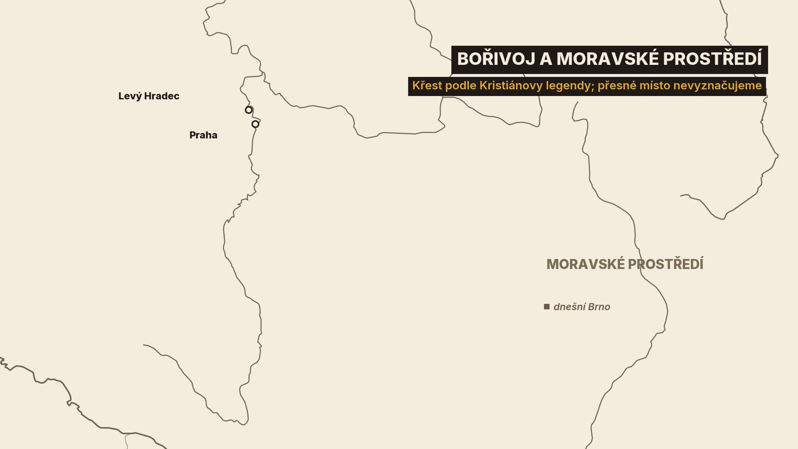
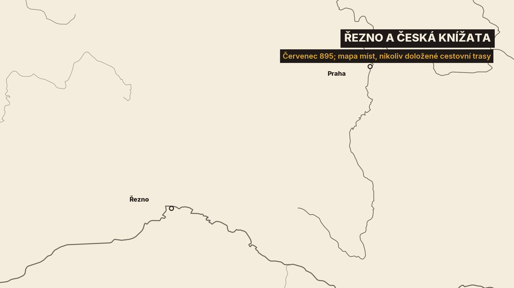
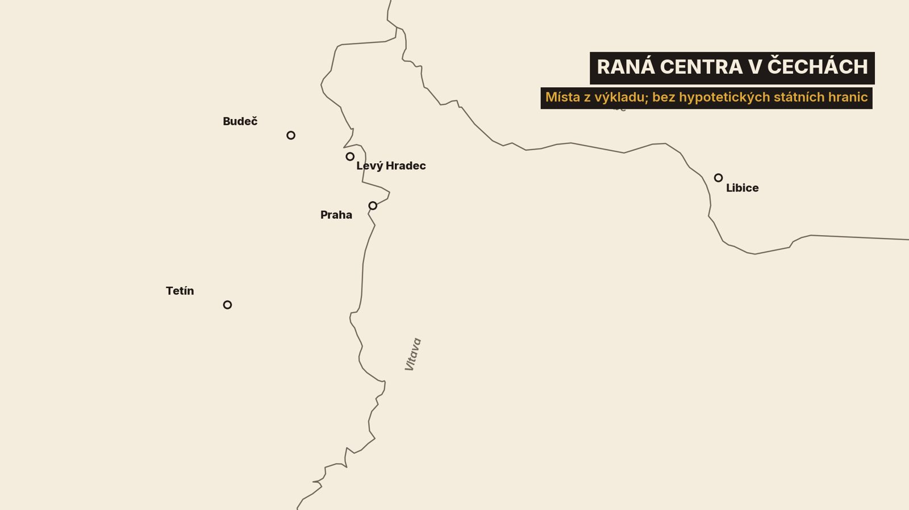
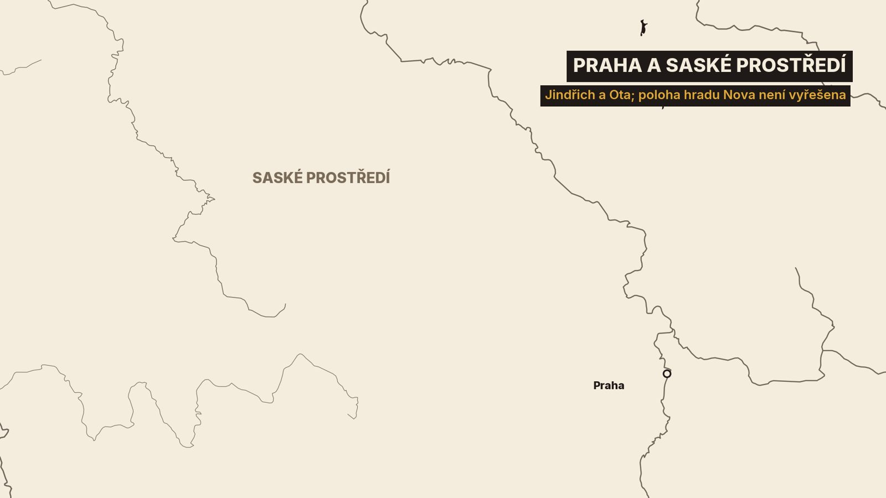
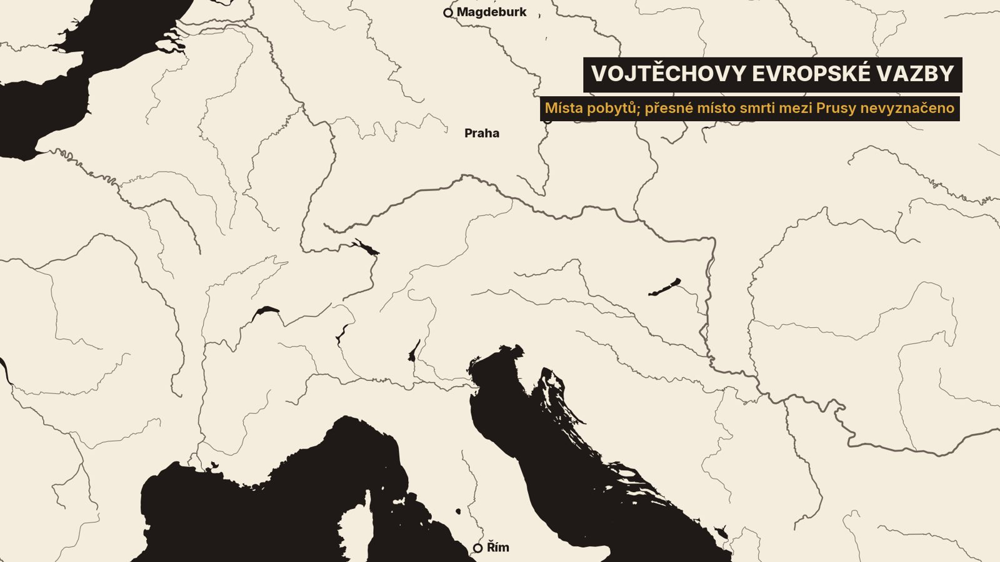
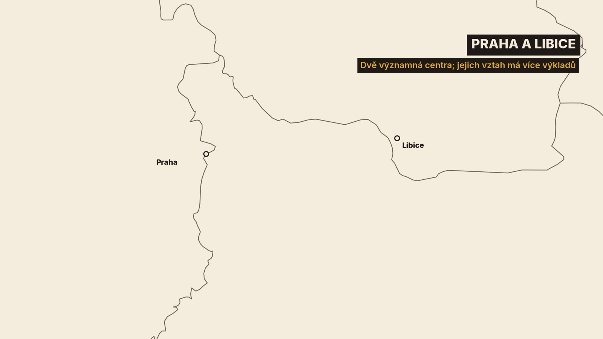

1. Bratři u dveří kostela
Kníže jde ráno do kostela. Cestou potká svého bratra, obejme ho a poděkuje mu za včerejší hostinu. Bratr vytáhne zpod pláště meč. „Včera jak chvíle dala, nyní však takto bratr bratru poslouží.“ Tak líčí poslední Václavovo ráno Kristiánova legenda. První ránu kníže přežije a holý meč zachytí rukou. U kostelních dveří ho ale dostihnou další ozbrojenci.[9]
Včera jak chvíle dala, nyní však takto bratr bratru poslouží.
Ti dva bratři se jmenují Václav a Boleslav. Jeden se stane patronem země. Druhý z ní udělá středoevropskou mocnost.[9][25]
Projdeme jejich příběh ve čtyřech krocích. Nejdřív Bořivoj, první křesťanský kníže, a jeho hrady. Pak Ludmila, Drahomíra a mladý Václav. Potom Boleslav, jeho války a jeho říše. A nakonec Praha plná cizích kupců, první biskup a krvavý den na Libici.[1][5][7][9][11][13][17]
Už na začátku narazíme na jednu zvláštnost. Den Václavovy smrti známe: 28. září. Rok ne. Kronikář Kosmas napsal 929. Dnešní historici pokládají za pravděpodobnější rok 935. Vysvětlíme si proč.[4][9][10][22]
O desátém století totiž vyprávějí tři druhy svědků: nálezy archeologů, zápisy kronikářů a legendy o svatých. Legendy jsou nejbarvitější, ale psaly se proto, aby oslavily světce. Budeme tedy vždy říkat, kdo právě mluví.[1][8]
2. Bořivoj mezi Moravou a Čechami
Bořivoj je první Přemyslovec, o kterém mluví historické zprávy. Před ním stojí v rodové pověsti řada bájných předků. V jejím čele je oráč Přemysl, kterého si lidé zvolili za knížete na radu hadačky. Tak to vypráví už Kristián. Je to pověst o počátku rodu, žádný doložený seznam vládců.[8][13]
S Bořivojem přichází příběh, který se dobře pamatuje. Kníže přijel na Moravu ke Svatoplukovi a byl pozván na hostinu. Jako pohan ale nesměl sedět u stolu mezi křesťany. Posadili ho na podlahu.[8]
Biskup Metoděj se ho prý zeptal, jestli se tak mocný muž nestydí, že pro pohanské modly sedí na zemi s pasáky. A slíbil mu: když se zřekneš model, staneš se pánem svých pánů. Bořivoj odpověděl: „Nač tedy váhat s pokřtěním?“[9]
Ta scéna je legenda a přesná slova u stolu si nikdo nezapsal. Jedno z ní ale poznáme spolehlivě. Křest tehdy znamenal víc než víru. Byl to vstup mezi vládce, se kterými se jedná jako s rovnými. A že Bořivoj přijal křest z Moravy v době, kdy Svatopluk ovládal i Čechy, pokládají historici za skutečnost. Stalo se to nejspíš v osmdesátých letech 9. století.[1][8][13]

Po návratu postavil Bořivoj kostel svatého Klimenta. Pokládá se za nejstarší kostel v Čechách a stál na Levém Hradci, na levém břehu Vltavy nedaleko Prahy.[2][8]
Archeologové tam našli hradiště osídlené zhruba od poloviny 9. století. Chránila ho hradba ze dřeva a hlíny, kterou zvenčí kryla kamenná zeď. Samotný Bořivojův kostel se ale zatím najít nepodařilo. Rotunda, jejíž základy leží pod dnešním kostelem, je až románská.[1][2]
Druhý kostel dal Bořivoj postavit už v Praze. Kostel Panny Marie stál na hradčanském ostrohu od konce 9. století. Jeho zdivo odkryli archeologové roku 1950. Hrob, který se v něm našel, připisují Bořivojovu synovi Spytihněvovi a jeho ženě.[3][14]
Pak se všechno změnilo. Roku 894 zemřel Svatopluk. Čeští předáci na to zareagovali rychle.[6]
V červenci roku 895 přijeli do Řezna za králem Arnulfem. Fuldské anály jmenují dva nejpřednější: Spytihněva a Vitislava. Podáním rukou se králi poddali. Čechy se tím odpoutaly od Moravy a přihlásily se k Bavorsku.[6]

Všimněme si, že knížata jsou dvě a s nimi přijeli další. Čechy ještě nebyly jedním státem. Přemyslovci ovládali jen jejich střed.[1][6][25]
Právě Spytihněv tento střed upevnil. Vládl do roku 915 a jeho panství se opíralo o hrady kolem Prahy. Patřily k nim Budeč, Tetín a Boleslav. Na každém z nich později sídlil někdo z knížecí rodiny.[25]

Po Spytihněvovi nastoupil jeho bratr Vratislav. Vládl jen krátce, do roku 921. Na Pražském hradě po něm zůstal kostel svatého Jiří. A doma dva malí synové, Václav a Boleslav.[9][14][25]
Kdo za ně bude vládnout? O to se teď střetly dvě ženy.[9][13]
3. Ludmila a Drahomíra
První byla Ludmila, vdova po Bořivojovi a babička obou chlapců. Druhá byla jejich matka Drahomíra. Ta pocházela ze země pohanských Slovanů, které se říkalo Stodor.[9][13]
Kristián vypráví, že malého Václava dostala na výchovu babička. Drahomíra se začala bát, že s vnukem ztratí i moc. Ludmila ustoupila. Odjela z Prahy na hrad Tetín nad Berounkou.[9]
Nepomohlo to. Drahomíra za ní poslala dva své velmože s družinou. Legenda zná i jejich jména: Tunna a Gommon. Večer vylomili dveře a Ludmilu uškrtili.[9]
Stalo se to roku 921. Kristián píše legendu o světici, a tak je u něj Ludmila svatá a Drahomíra zlá. Za tím příběhem je ale vidět obyčejný politický spor. Kdo vychovává budoucího knížete, ten drží moc.[9][13]
Tetín dnes navštívit můžete. Hradiště tam opravdu stálo, vzniklo na přelomu devátého a desátého století. Zřícenina hradu i kostely, které tam uvidíte, jsou ale mladší. Z Ludmiliny doby zůstal hlavně ostroh a výhled na řeku.[16]
Václav mezitím podle legendy studoval na Budči. Kristián říká, že ho tam otec poslal, aby se učil písmu.[9][15]
A na Budči stojí něco mimořádného. Rotunda svatého Petra a Pavla. Podle Kristiána ji založil kníže Spytihněv. Stojí dodnes a je to nejstarší stojící kamenná stavba v Čechách. Když do ní vejdete, jste mezi zdmi, které pamatují první Přemyslovce.[9][15]
Václav dospěl, ujal se vlády a matku na čas vyhnal ze země. Ludmilino tělo dal převézt z Tetína do Prahy, do kostela svatého Jiří. Brzy ho ale čekala větší starost než rodinné spory.[9]
4. Václav mezi vírou a mocí
Legenda líčí Václava jako knížete, který sám mele mouku, peče hostie a lisuje mešní víno. Kristián přidává ještě jednu podrobnost. Když před velikonočním křtem chyběly děti, poslal prý Václav na trh a všechny chlapce, kteří tam byli na prodej, koupil a dal pokřtít.[9]
Legenda tím chce ukázat zbožnost. Nám mimoděk prozradí něco jiného: na pražském trhu se běžně prodávali lidé. Ještě se k tomu vrátíme.[9][25]
Václav ale nebyl mnich. Byl to kníže s družinou a s mocnými sousedy. Roku 929 přitáhl ku Praze saský král Jindřich s vojskem. Kronikář Widukind píše, že se mu pražský kníže poddal a že král učinil Čechy poplatnými.[7][12]

Saský kronikář to líčí jako úplné vítězství svého krále. Dnešní historici jsou opatrnější. Jisté je, že Čechy od té doby platily říši poplatek.[7][12][22]
Na Pražském hradě tehdy Václav stavěl nový kostel, rotundu svatého Víta. O svolení ke stavbě musel požádat biskupa v Řezně. Dnes na jejím místě stojí katedrála.[3][9][14]
Pak přišla pozvánka od bratra. Boleslav sídlil na svém hradě, v dnešní Staré Boleslavi. Pozval Václava na svátek svatých Kosmy a Damiána a na hostinu. Co se stalo ráno, už víme.[9][22]
Že Boleslav zabil svého bratra, neříkají jen české legendy. Píše to i Widukind v Sasku: Boleslav prý zabil bratra, křesťana velmi oddaného Bohu. Dva na sobě nezávislé hlasy se tu shodují.[7][9]
Proč to udělal? Legenda mluví o touze po vládě a o ďáblově našeptávání. Historici vidí boj o moc mezi bratry, kteří se neshodli ani v politice vůči sousedům. Boleslav po svém nástupu přestal říši platit a začal se Sasy válčit.[7][9][22]
A teď slíbené vysvětlení dvou letopočtů. Kosmas napsal, že Václav zemřel roku 929. Jenže Kosmas psal o dvě stě let později. Widukind, který byl současníkem, spojuje vraždu s dobou, kdy v Sasku nastoupil nový král Ota. A Ota nastoupil roku 936. Proto dnes většina historiků dává přednost roku 935.[4][7][10][22]
Václavovo tělo dal Boleslav po třech letech převézt do Prahy, do rotundy svatého Víta. Z mrtvého knížete se brzy stal světec. A jeho vrah vládl Čechám dalších několik desetiletí.[9][22]
V dějepisu má Boleslav přízvisko Ukrutný. Starší dějepisci ho stavěli proti Václavovi: slabý světec proti silnému vládci. Dnešní historici to tak ostře nevidí. Oba bratři budovali tutéž knížecí moc, jen každý jinými prostředky.[12][22]
5. Boleslav a jeho říše
Boleslavova válka se Sasy začala výhrou. Napadl sousedního knížete, který se spoléhal na saskou pomoc. Sasové poslali dvě vojska. Boleslav proti nim rozdělil své síly. Jedno vojsko zahnal na útěk. Druhé přepadl ve chvíli, kdy po vyhrané šarvátce sbíralo kořist, a zničil ho i s velitelem. Potom dobyl hrad svého souseda.[7]
Král Ota to nenechal být. Widukind píše, že válka trvala až do čtrnáctého roku královy vlády. Nebyla to jedna velká bitva. Byly to roky nájezdů a odvetných tažení přes pohraniční hory.[7]
Rozhodlo se roku 950. Ota vtrhl do Čech se silným vojskem a oblehl hrad, který kronikář nazývá Nova, tedy Nový. Hájil ho Boleslavův syn. Kde ten hrad stál, se historici dodnes přou.[7]
K rozhodujícímu útoku nedošlo. Boleslav viděl sílu královského vojska a rozhodl se raději poddat. Postavil se pod korouhve, vyslechl krále a dostal odpuštění. Zůstal knížetem, uznal Otovu svrchovanost a z nepřítele se stal spojenec.[7][22]
Ukázalo se to o pět let později. 10. srpna 955 se na řece Lechu v Bavorsku střetlo Otovo vojsko s Maďary, jejichž jízdní nájezdy pustošily Evropu. V Otově vojsku stálo i tisíc bojovníků z Čech.[22][25]
Většina z nich v bitvě padla. Ota ale zvítězil a doba velkých maďarských nájezdů tím skončila.[25]
Boleslavovi se tím otevřela cesta na východ. Během několika let ovládl severní Moravu, Slezsko a území až po Krakov. Jeden cestovatel, o kterém si hned povíme víc, ho nazval králem Prahy, Čech a Krakova. Z jednoho konce jeho země na druhý se prý cestovalo tři týdny.[18][22][25]
Boleslav, král Prahy, Čech a Krakova
Nebyl to jednotný stát. Bylo to několik území, která kníže držel silou a ze kterých bral kořist. A tou nejcennější kořistí byli lidé. Zajatci z pohanských krajů končili na pražském trhu jako otroci. Podle historika Jiřího Slámy to byl Boleslavův největší příjem.[25]
Vedle meče používal Boleslav i sňatky. Jeho dcera Doubravka se roku 965 provdala za polského knížete Měška. O dva roky později poslal Boleslav zeťovi na pomoc své bojovníky.[12][22]
A kam mířily karavany kupců z celé té velké říše? Do Prahy.[18][25]
6. Praha, stříbro a obchod
V šedesátých letech 10. století přijel do Prahy muž jménem Ibráhím ibn Jakúb. Byl to vzdělaný Žid z arabského Španělska a cestoval Evropou ve službách córdobského chalífy. O své cestě sepsal zprávu a díky ní víme, jak tehdejší Praha vypadala cizíma očima.[18][25]
A je to popis obdivný. Ibráhím napsal: „Město Praha je postaveno z kamene a vápna a je nejbohatší ze zemí na zboží.“[18]
Město Praha je postaveno z kamene a vápna a je nejbohatší ze zemí na zboží.
Kdo tam obchodoval? Z Krakova podle něj přicházeli Rusové a Slované se zbožím. Těmi Rusy byli nejspíš Varjagové z Kyjeva. Z maďarských zemí a ze zemí islámu přijížděli Židé a Maďaři. V Praze se tak potkávaly cesty, které vedly až do Córdoby a do Kyjeva.[25]
Co se prodávalo? Kožešiny z východu. Sedla, uzdy a štíty, které se vyráběly přímo v Praze. A především otroci. Právě o obchod s nimi se Ibráhím na své cestě zajímal nejvíc.[25]
Ibráhíma zaujala i místní měna. Vedle mincí se v Praze platilo malými šátečky. Deset šátečků mělo cenu jedné mince. Zní to jako pohádka, ale jeden takový šáteček se opravdu našel: v hrobě z 9. století v Uherském Hradišti.[25]
A právě za Boleslava se v Praze začaly razit první české mince, stříbrné denáry se jménem knížete. O přesném roce se numismatici přou. Jedni je kladou už do doby kolem roku 955, jiní až na konec Boleslavovy vlády. Pevný kurz šátečků k minci ale napovídá, že v Ibráhímově době už denáry obíhaly.[17][22][25]
Jak tedy Ibráhímova Praha vypadala? Trh ležel v podhradí, v místech dnešní Malé Strany. Nad ním podle arabské zprávy stála velká opevněná pevnost.[18][25]
Z kamene a vápna ale celé město nebylo. Dokonce i na Hradě našli archeologové dřevěné domy a cesty vyložené kládami. Kamenné byly kostely. A kamenné čelo měla hradba, jinak postavená ze dřeva a hlíny. Je možné, že právě ta hradba udělala na Ibráhíma dojem.[1][3][14][19]
Bohatému knížeti z bohatého města už chybělo jen jedno: vlastní biskup.[11][12]
7. Praha získává biskupa
Až dosud patřily Čechy církevně pod biskupa v bavorském Řezně. Sám Václav ho musel žádat o svolení, když chtěl stavět kostel. Kníže, který chtěl být pánem ve své zemi, potřeboval biskupa v Praze.[9][11]
Boleslav První se ho nedočkal. Zemřel roku 972. Jednání dokončil krátce nato jeho syn, Boleslav Druhý. Pražské biskupství bylo zřízeno roku 973.[11][22]
Řezenský biskup se ovšem bránil, přicházel o velký kus diecéze. Do věci se vložily i spory v říši. První pražský biskup byl proto vysvěcen až v lednu roku 976.[11]
Jmenoval se Dětmar. Byl to saský mnich z kláštera Corvey a kníže si ho vybral z praktického důvodu: uměl slovansky. Do Čech původně přišel jako poutník. Vysvětil ho arcibiskup z Mohuče.[11]
Dětmar zemřel na začátku roku 982. Jeho nástupcem zvolili na Levém Hradci Čecha. Jmenoval se Vojtěch a pocházel z mocného rodu Slavníkovců, který sídlil na Libici.[2][11][20][21]
Vojtěch studoval devět let v Magdeburku. Biskupské svěcení přijal roku 983 v italské Veroně.[20][21]
A v Praze narazil. Chtěl po svých věřících, aby žili jako křesťané. Podle legend mu vadilo mnohoženství velmožů, ženatí kněží a prodej křesťanských otroků. Tedy přesně ten obchod, ze kterého Praha bohatla.[20][25]
Vojtěch to vzdal a odešel do Říma, kde vstoupil do kláštera. Na naléhání z Čech se po letech vrátil. Přivedl s sebou mnichy z římského kláštera a roku 993 s nimi a s knížetem založil v Břevnově první mužský klášter v Čechách.[20][21]

Smír ale nevydržel. Vojtěch odešel podruhé a do Prahy se už nevrátil. Vydal se hlásat křesťanství k pohanským Prusům u Baltu. Tam ho v dubnu roku 997 zabili.[20][21]
Dva roky předtím však přišla rána, která zasáhla celý jeho rod.[10][20]

8. Libice a Slavníkovci
Libice leží na soutoku Cidliny s Labem. Ve druhé polovině 10. století to bylo sídlo Slavníkovců. Kolem roku 955 se tu narodil i Vojtěch.[5]
Slavníkovci si na hradě postavili kostel podle vzoru saské otonské architektury, tedy toho nejlepšího, co se tehdy v říši stavělo. Jeho půdorys je dnes na místě vyznačený.[5]
Razili i vlastní mince. Je na nich jméno Vojtěchova bratra Soběslava, hlavy rodu. Jak velká byla jejich moc, o tom se historici přou. Starší výklad z nich dělal pány velké části Čech. Jiří Sláma soudí, že jejich moc roku 995 sahala sotva za Libici.[12][17][25]
Přišlo to na konci září roku 995. Soběslav byl s bojovníky daleko, na výpravě krále Oty Třetího proti Polabským Slovanům. Biskup Vojtěch žil v římském klášteře. Na Libici zůstali jejich bratři s rodinami.[20][25]
V pátek 27. září oblehla hrad přemyslovská družina. Obležení prý prosili, aby směli v klidu oslavit zítřejší svátek svatého Václava. Podle legendy dostali odpověď: „Je-li vaším svatým Václav, naším je Boleslav.“ Druhý den hrad padl. Všechny Slavníkovce, i s malými dětmi, pobili před hradním kostelem.[10][25]
Je-li vaším svatým Václav, naším je Boleslav.
Zahynuli čtyři Vojtěchovi bratři. Kosmas na jiném místě píše o pěti a uvádí jejich jména, ale starší Brunova legenda mluví o čtyřech.[10][12]
Kdo dal rozkaz? Brunova legenda viní přímo knížete Boleslava Druhého: prý porušil příměří. Kosmas, který psal mnohem později, knížete hájí a vinu dává předákům. Kníže byl tehdy opravdu vážně nemocný. Historici se v tom dodnes neshodnou. Jisté je, že z pádu Libice těžila přemyslovská družina.[10][12][25]
A teď překvapení. Archeologové čekali, že na Libici najdou silnou vrstvu spáleniště. Nenašli ji. Rok 995 v zemi skoro není vidět.[5]
Hrad totiž žil dál. Jako správní středisko sloužil až do poloviny 12. století. Vyvraždění Slavníkovců to nevyvrací. Ukazuje jen, že konec jednoho rodu nebyl koncem místa. A také že archeologové zatím prozkoumali jen asi pět procent hradiště.[5]
Na konci 10. století tedy v Čechách vládne jediný rod. Má hlavní město, vlastní mince a vlastního biskupa.[5][11][12]
9. Co po prvních Přemyslovcích zůstalo
Z dnešního dílu si odnesme pět věcí.
Za prvé: Bořivoj je první Přemyslovec, kterého známe z historických zpráv. Přijal křest z Velké Moravy. A když Morava zeslábla, jeho synové se roku 895 přiklonili k Bavorsku.[6][8][13]
Za druhé: první Přemyslovci ovládali jen střed Čech. Opírali se o hrady kolem Prahy: Levý Hradec, Budeč, Tetín. Na všech třech dnes můžete stát.[2][15][16][25]
Za třetí: Václav byl zavražděn 28. září, nejspíš roku 935. Jeho bratr Boleslav pak z malého knížectví udělal říši sahající až ke Krakovu.[7][22][25]
Za čtvrté: Praha desátého století byla mezinárodní tržiště. Obchodovalo se tu s kožešinami i s lidmi, platilo se šátečky a brzy i prvními českými denáry. Od roku 973 měla vlastní biskupství.[11][17][25]
Za páté: roku 995 byli na Libici vyvražděni Slavníkovci. Přemyslovci zůstali v Čechách sami.[5][10]
Která z těchto památek je vám nejblíž: Levý Hradec, Budeč, Tetín, nebo Libice? Napište nám, kterou jste navštívili. A pokud ve výkladu najdete chybu, napište ji do komentáře i se zdrojem.
A co udělá rod, který už nemá soupeře? To uvidíme příště: Oldřich a Morava, Břetislav a první český král. Pokračujeme přemyslovským státem.


_retouched.jpg){kind=link}


_Liber_Chronicarum_(serietitel),_RP-P-2016-49-86-11.jpg){kind=link}
,_obr._011_(sign._XVI_000286).jpg){kind=link}
_(26187031696).jpg){kind=link}


.png){kind=link}
_I.jpg){kind=link}


.png){kind=link}